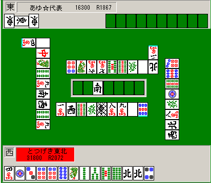
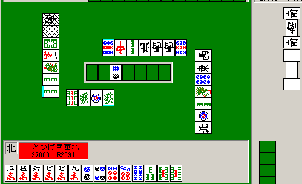
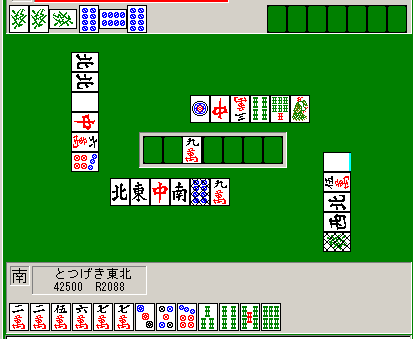
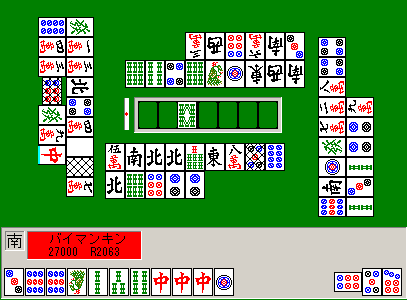
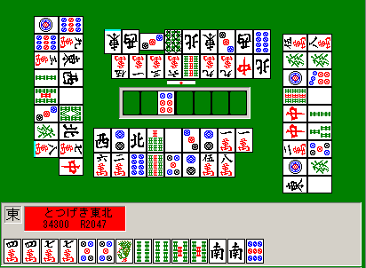

状況判断技術論
単純に「手を作る」「降りる」だけでなく、相手の挙動と関連してどう打つかを述べる

超ラン勝ち組になるための目標：局あたり全収支+25以上
最強水準になるための目標：局あたり全収支+100以上
成績を向上させるために３番目に重要な広範な技術：
総体的な状況の判断、つまり例えばある仕掛けに対して攻めるべきか降りるべきか、リーチの待ち牌をどう決めるか、また、相手はいつくらいにテンパイしたと見るべきなのかというようなことについて論じる。
例えば、オーラストップで役なしテンパイした時、ドラが見えておらず役牌ポンしている人がいるときに、リーチすべきかどうかの明確な答えがここにはある。
状況判断技術は、面前メンツ構成技術や、ベタオリの技術に比較すれば個別に大差がつく技術ではないように思う（これは、技術の量に大差がつかないことを意味しない。技術量にかなりの差があったとしても、平均順位に与える影響がそれほど大きくならないものが多いという意味である）が、この技術の一部は時々非常に大きな差を生む。特に成績に影響を与える項目については重要などのしるしを付した。
読む前に全ての「状況判断」に関する先入観を白紙に戻してほしい。
「白と中がポンされた時に発を切ることはよくない」というのは一般的にはそうだが、東風荘の順位麻雀においてはそうでもないことも多々あるし、そもそも、その段階で発をトイツにして持たれている状況は非常に少ない。その上大三元を上がられる状況になるとさらに少ない。
同様に、確かに自分が親の時に染め手にヤクハイを２つ鳴かせてしまうことは良いことではないが、絞ったからと言ってそのヤクハイが他家からも流局まで絞り切られることはそんなにないし、絞らなくても親かぶりさせられることはそう多くはない。
麻雀で強くなるには、「順位に影響を与えない技術」についてあれこれ知ることは重要ではないし、ある行為がある理由で順位に影響するとしても、その行為をしないことによってまた別の順位への影響があるような場合は、必ずしも一元的に「それはダメ」と言い切れるわけではないのだ（絞ったせいで自分の和了機会が減り親かぶり率が増える、などの影響）。
そのくせ、対処技術は「語り」の対象になりやすいために、どっちでもそんなに変わらないような部分についても一般では議論されていたりする。そういう知識をムダにつけても、語り屋にはなれても最強水準にはなれない。
もう一度言う。ベタオリ技術や面前メンツ構成技術がまだ充分に身についていないなら、ぜひそちらを重点的にレベルアップすべきだ。染め手になど全く絞らなくても充分な成績は残せるし、おれは実際、染め手やらに対してあまり絞らない。
ここでの記述で一番重要なのは「相手がいつくらいにテンパイしたと想定すればいいのか」「染め手などに対する攻め方はどうすべきか」というような部分の漠然とした感覚といくつかの実測データ、それといくつかの戦術理論であって、あいにく、細かい語りの対象になるような技術はほとんど成績に影響を与えない（プラスの要素とマイナスの要素が複数あって、どちらが良いのかの統計データが出てこない、例えば染め手者が２フーロすることによってタンピンテンパイの他家がムダにダマにして失点が減ったりすることもけっこう多い）。
一般でよく言われるような状況判断技術は、語りのかっこよさとは無関係にあまり役に立たない。
自称「強い」人らに、この講座に書いてある順位に影響する重要な技術の問題を出してみるといい。「状況による〜〜」などと語りだすやつは多いが正解を理由つきで言えるやつは少ない。
この講座の内容のほとんど全ては、そこらに売ってる戦術書から得た知識をただ羅列しているのではなくて、おれの実験と考察によって独自に導き出されたものであり、おれと同じ程度に麻雀に精通している人でなければ知らない（少なくとも明確に言葉にできていないと思われる）技術だからだ。
ただまた、「この技術は重要でない」とおれが判断しているということは、おれの技術がまだ未熟であるという可能性も持つ。
つまり実はそこでの技術差はもっともっと本来大きいのだが、とつげき東北がその技術を身につけていないゆえに「差がつかない」と思っているだけかもしれない。
超ランでまだ5000試合弱しかこなしていないために、充分なデータや経験則がつかめていないということもあり得る。
ここでの記述は今後変化するかもしれないということを断った上で、各論に入る。
「重要」とのチェックがある項目については、超ラン平均の打ち手が身につける分には、ある程度実力差となって表れると思う。
通常の食い仕掛けのどのあたりからをテンパイとみなすべきか：
食い仕掛けはリーチと違って「ここでテンパイ」という目印がないために、「そろそろテンパイかなあ」という程度の判断をつける必要がある。
おれの場合普通は３鳴き、２鳴き＋いくつかの中牌手出し、１鳴きの中順以降あたりからをテンパイと考えている。
そしてその判断は、相手の手の大きさ、自分の手の良さによって変化させるべきだ（２鳴き直後でもヤクハイとドラのポンなら慎重の原則でテンパイと考える）。
ちなみに、この判断はおれでも打つときの気分に左右されたりするから、厳密である必要はない。
ただ、だいたいは「危険っぽいかな」くらいの感覚をつけることは大事だ。超ラン平均レベルは食い仕掛けに無警戒すぎる。
例：

例えばこういう状況だと相手はそろそろテンパイしているかなと考えるべきだ。
この図の状況なら４マンが今通ったので通して良いが、４ピンや８ピンを無造作に切るような段階ではない。
自分がメンタンの１シャンテン程度ならばある程度押しても良いが、３マン５ピンなどと通して１シャンテンというならやめた方が良い。
例：

親の仕掛けでこれ。まだ手出しで字牌や端牌を出している時だ。
自分の手がまずまずの形になっているので２マンを切ったが白のみに振ってしまった。
しかし、もしここで東西と切っているのではなく６ソウ４マンなどと切ってあったら、もうテンパイだと考えてもう少し安全に打ったと思われる。
あるいは捨て牌が、１ピン１２ソウ８ピンではなく３マン６マン２ピン６ピン、というようならホンイツやトイトイの危険が高く、親のその手にこのクソ形から攻める気はしない。
例：

これは２鳴き＋手出しの状態だが、捨て牌を見ればわかる通りホンイツ、トイトイあたりが危険である。ドラも見えていない。
自分の手はまずまずなのである程度攻めたいが、このような危険な仕掛けに対しては、相手がもしある手であったなら、ある牌がどれくらい危険かということを考えるべきだ。
もしもこの仕掛けがホンイツであるなら、当たり牌は２−５ ３−６ ４−７ピンあたりが危険であり、これらを切ることは大変危ないということがわかる。
もしこの仕掛けがトイトイであるなら、７マンはまずまず安全だとわかるだろう（少なくとも５ピンなどよりは安全だ。相手がトイツで持っている可能性が低い）。
もしこの仕掛けがヤクハイのみやヤクハイドラドラであるなら、３ソウあたりは安全度が高い（シュンツ系の待ちの方が良いような手だから、序順の４ソウ切りから３ソウの安全度は高い）。
たまたまドラドラを持っていることというのは、２つのトイツをポンした上でホンイツを作ることよりはそうとう難しいこと（状況が少ないこと）なので、この程度の段階では（ドラを切ることは勧めないが）過敏になる必要はないかもしれない。
トイトイに対しても、別にこの段階で５マンを切ることはさほど危険ではない。当たり牌候補が多い分、５マンがたまたま当たりになっている確率は低い。
しかしホンイツはかなり危険で、ここでもし３５７ピンではなく３４７ピンだったとしても、もう７ピンを切ることは平場ではしない。
７マンはそれほど危険ではないのでそれを切ると思う。ただしこの例の場合はダントツのトップだから特別で、もうそろそろベタオリをすべきだが。
安上がりはいつするか：
理屈については機会があればまとめて書くが、どうもこの講座を読んで、先制リーチ麻雀を心がけるあまり効率が悪くなっている人がいるようなので結論だけ書いておく。
東2以降でトップ（特に30000点以上）であれば、安くても早い上がりも積極的に狙うべきである。また2位であっても、ある程度早い安上がりを目指すべきである。
当然、そのためにヤクハイの1鳴きをすることは有効である。
東2以降でトップの場合、1000点にしかならなくても、むしろ安手に放銃してしまってさえ「局が流れる」ということに意義（安定Ｒの向上）があるのだ。
もちろん、それほど和了率を下げることなく高い手にできるならそうしていいし、なにもリーチ5200手をダマにして2600にする必要はない。
仮に自分が38000点もある東2〜東3でも、先制リャンメンなら普通のリーチ条件に従ってリーチしておいて問題ない。
また、バラバラすぎる手から無理になんでも1鳴きしても良いことはあまりない。
麻雀を単なる「4名で分布にしたがった得点でのランダム和了を順に繰り返すゲーム」と考えて、シミュレートしてくれる人がいると助かる。
東●での得点分布がある状態の時、何点で上がれば（またはどのような点数の移動があれば）最終順位がどの程度になるか、ということを、ほとんど正確にそれでシミュレートできると思われるからだ。
東2以降でトップであれば、安上がりであっても局が進むことによって得られるメリットは（おそらく普通の人の想像よりもかなり）大きいだろう。
テンパイ付近の相手がいる時にどうするか、危険牌はいつ切るか（「絞り」技術の基本）： 超重要
自分が上がるべき手・状況では、「相手がまだテンパイしていない」と考えられる時、不要な危険牌候補は早い目に全て切ってしまうこと。
（例えば下家が染め手をし始めた時に自分がメンタンピンの２シャンテンなら、その間に染め色牌の不要牌やヤクハイを全て処理すること）。
逆に相手がテンパイしたと思われる瞬間から、危険牌はおさえ、自分がテンパイした瞬間に１度だけ勝負するようにすること。
（メンタンピン１シャンテンになった時に相手が３鳴きして染め色を捨て始めたら、最後の余った３３４は最後まで残し、テンパイの瞬間に３を勝負する）。
これはどんな状況の時にもほとんど当てはまる、絞り・対処技術の基本的考え方だと思っていい。非常に重要だ。
絞るということは時々重要だが、自分が絞ったからと言って他家も絞るとは限らない。
他家が先にヤクハイなどをポンポンさせてしまったら、余った牌はもう切ることができなくなり、自分はベタオリまたは危険な勝負をせざるを得なくなるのだ。
絞るべき時とは、点数状況的にドラをポンさせなければ勝ちだとか、自分の手がばらばらすぎるのでヤクハイは鳴かせず安いホンイツにさせようとか、そういう時だけでいい。
なぜおれの放銃率が低く、和了率が高いのか？
ムダに絞ったりして和了機会を減少させることなく、安全なうちに将来の危険牌を全て処理し、先制リーチをかけることができるからだ。危険になったらさっさと降りてしまうからだ。
中途半端に絞るくせに相手が張ってからも端牌だからと危険牌を切っていると、勝てない。
ヤクハイのドラをいつ切るか：
基本的に、自分が使わなくなったら切っていい。
具体的にはメンタンピンの好形であれば第一打から切るし、ある程度リャンメンがきれいにそろったら切る。
上がる気がある局では、自分が使わない以上はなるべく早く切ることが重要だ（これを残しておくからただの役牌ポン２フーロに対してベタオリせざるを得なくなり和了率が下がるのだ）。
もちろん、オーラスに２位と7000点差というような時で、３位や４位が接戦というようならヤクハイドラは切らなくていい。
ドラが字牌でヤクハイドラ３が作れなければ7000点差はそうそう埋まらない。
相手と自分がテンパイした時に何で待つか： 超重要
東１に良い手（ドラドラ手）を張った。しかし親リーが来ている。無スジを通せばリーチドラドラリャンメンテンパイ、アンパイを切ればリーチドラドラのカンチャン待ちになる、とすればどうする？
また、チートイドラドラを６待ちでテンパイしたが、他家からリーチが来た時に西（１枚切れ）を引いた。６は無スジでリーチ牌のソバ。６を切るか西を切るか？
自分はいつもどうしているか考えて欲しい。
ある相手がテンパイしている時に自分も張ったとする。この時、自分の手が勝負に価しないほどくず手なら降りることを考えるが、そうではない時には最大限自分が上がる確率の高い方を選択すべきだ。非常に重要だ。（ちなみに上がる点数ではなくて上がる確率が高まることの方がいっそう重要なので注意。例えば他家リーチが来ているなら、シャンポンの5200ではなくリャンメンの3900に取るべき）。
上に挙げた２つの例で言えば、最初の例では無スジを通してリャンメンでリーチすべきだし、後の例では６を切るべき（そしてリーチすべき）だ。
最初の例で、仮にその１順は安全でも、カンチャン待ちで上がりきれることはなかなかないだろう。その間に自分は何度も危険牌を切るはめになる。結局は和了率は下がり、放銃率が上がる結果になるのだ。
同様に後の例で、西を切っても自分の上がり牌の６が出ることはほとんどなく、自分が危険牌を切りつづけねばならない（これはそう、面前メンツ構成技術論で言ったくずテンパイとそっくりだ）。西待ちなら、ベタオリしようとした他家からも上がるチャンスがあり、２家リーチの場合だとずいぶんましな待ちである。
逆に自分の手はいまいちで既に降りる気でいるなら（例えばチートイのみ手で親リーチが来た時など）、６ではなく西を切り、危なくなったら即降りることを考えよう。その場合は、和了率は下がるが放銃率も下げることができるので、戦略としては悪くない。また流局間際とかなら、どうせ和了できる確率もさほど高くないわけだから、ダマにして安全な方を選ぶということはある。それも戦略のうちだ。しかし何の戦略にも基づかない、和了率も放銃率も悪化させるような中途半端な打ち方はやめよう。
ちなみにある他家が染め手をしている時に、染め色の牌で待つかそうでない牌で待つかについてだが、基本的に染め色でない牌で待つ方が良い。
相手がテンパイする前に染め色の３５など切りとばしてしまって、他の色で待とう。メンタンピン一発を当ててやる(笑)。
染め色で待つと、ベタオリした他家からは絶対に出ないし、上がり牌を抱え込まれることもある。和了率が下がるのだ。
これも「上がる気があるなら最大限自分の上がれる確率の高い方を選択する」という原則に従えば自然とわかることだが。
チートイの待ち牌： やや重要
上に書いたこととからめて、チートイの話をする。
チートイツは極めて攻撃的な役である。間違っても守備的な役ではない。
ばくち的要素が非常に高く、したがってトップ目はなるべく狙わないほうが良い役である。
なぜか超ランで放銃を避けたがる人がチートイをよくやるようだが、非常に効率が悪い。
なにしろテンパイする順目や形テンを取れるかどうかが非常に偶然性に左右される。他家の攻撃に対してはテンパイを維持しながら回すことが非常に難しい上めくりあいになる（危険牌がアンコになったら「勝負！」するかテンパイを諦めるかの２択である）。
トップ目は（他に上がれる見込みがある限り）チートイツを狙うべきではない。
ところで、チートイツのリーチだが、必ず、字牌、それが不可能なら４や６の切れた１９牌で待ってリーチするようにしよう（ドラ待ちは別で中牌でよい）。
５順目などで河にほとんど数牌を出していない段階でなら引っ掛けリーチでも悪くはないかもしれないが、基本的には今言った「良い」待ち以外ではリーチしない。
せっかく序順でチートイを張ったのに３待ちリーチとか絶対するな。
チートイは字牌などの待ちなら６割近く上がれるもので、それを普通のクソ待ち（和了率30％＋α）にするのは限りなくもったいない（できすぎくん調べ）。
例えば東１の５順目にチートイのみで他家からロン牌が出ても、見逃して字牌待ちにしてリーチということはよくやる（悪い結果になった記憶より良い結果になった記憶の方がずいぶん多い）。
この場合、字牌待ちに変えられれば50％以上上がれるわけだから、点数の期待値が２倍（リーチ）に加えて一発・裏ドラ分などもあるため、単純計算の「期待値」的にも有効である。
また終盤の地獄待ちチートイも効果的である。例えば残りツモ枚数がわずか12枚の時に地獄待ちのチートイをテンパイしたら即リーチすべきである。
その牌は本来不要なはずの牌であり、もしもそれ以前に他家がツモっていれば切られているだろう牌であり、その時点で切られていないということは山に残っている可能性が非常に高いからである。
この理屈の及ぼす影響は残りツモ数が少なければ少ないほど大きいことは言うまでもない。
追っかけリーチのタイミング： 重要
平場で他家のリーチに対して自分がテンパイ。追っかけリーチをするか？
基本的に、降りる気がない場合で、かつリーチすることによって極端に出にくくなる場合を除いて全てリーチしていい。ダマ7700クラスならダマでいいが。
またこれは追っかけに限らず、相手の食い仕掛けなどについても同様のことが言える。
・追っかけリーチをしても、他家からの出が悪くならない場合はリーチ。 重要
例えば字牌待ち含みなどの時。ぜひリーチすべし。また染め手テンパイの人がいてそれと同じ色で待っている場合、どうせ染め色は出にくいのだからリーチしていい。
・共通スジ待ちなどはリーチ。
今書いたことと同じようなことだが、ドラドラの手で135 78の１シャンテン形に9が入ったとする。1は安全で5は危険だとしても、5を切ってリーチすべきだ。
・自分の待ちがリャンメンで、相手の現物待ちでない場合はリーチ。 重要
あんまりムダに考えたりせずリーチしていい。相手が３フーロしていたりすると怖いのはわかるが、せっかく7700になるならぜひリーチすればいい。
・追っかけリーチすると極端に出にくくなり、また得点の増加も少ない場合はリーチしない。 重要
せっかく相手の現物待ちのダマ5200なのに、リーチしてしまうと得点は8000程度にしかならないうえ上がれる確率も激減してしまう。こういう追っかけリーチはしない。
また、同じく現物待ちでダマ1300という時は、リーチしても得点が2600〜程度にしかならない。こういう追っかけリーチはしない。
染め手テンパイの人がいる場合に、染め色以外で5200テンパイしたとき等も同様。
・親リーチに対するピンフのみなどの時は降りることも考えること。
安全な数順はダマにしておき、超危険牌を引いたら降りる、という戦略も悪くない。これは、ピンフをリーチしても得点があまり変わらず、逆に出にくくなる分危険度が増すことによる。
・自分の待ちが悪く、特に出やすい待ちでもない場合はリーチしてはいけない。
追っかけクソ待ちの場合の不利さはデータに出ている通り。特別に「出やすい」とか「リーチすれば5200」などの場合を除いて、降りたり待ちを変えなければならない。
・自分の待ちが悪く、親でもなく、2600程度の手は絶対降りろ。1300は最悪。死ぬべし。
いわずもがな。未だにこういうリーチしまくってる1950未満はたくさんいるがね。そろそろ気付いた方がいい。
以上は基本的に平場の判断。「もうこれを上がらないとどうしようもない」ような状況なら追っかけクソ待ちリーチのみ、などもないではない・・・が、1950以下はそればっかりだ（ ´Д`）。
上がり安さと点数をどの程度のバランスで比較するか： やや重要
状況を判断することの一部としてだが、上がり安さを優先する時と上がった点数を優先する時がある。
東１の３順目にドラの５ソウ待ちでチートイツをテンパイした。こういう場合はドラ待ちではなく字牌待ちにしてリーチすることも多い。
序順のうちにドラが切られることは少なく、特に、５であれば余ってくることもなかなかない。
５ドラ待ちということは（終盤のダマならともかく）ツモる以外にほとんど上がり目がないと思って良い。
東３や東４で逆転が必要なら別だが、東１の最初なら劇的に上がりにくい6400や8000ではなくて５割方上がれる3200程度を取る方が良い。
同様に東１でヤクハイとドラ３をポンした時などに、無理に（待ちがわかりやすくなったり、待ちを狭めたりして）ホンイツをつけたりしない方がいい。
平場においては、最速で上がれるマンガン手が最高手である。
なお、テンパイした時にメンピンにすべきかリーチ三色（カンチャン）にすべきかだが、おれならほとんどメンピンにする。
リーチ以外に１ハンあれば間違いなくリャンメンにする方がいい（片方が３枚見えなどならカンチャンにすることも）。
リーチのみリャンメンかリーチ三色カンチャンか、となると、親なら半々でリーチのみリャンメン、子ならだいたい三色カンチャン、という感じにしていると思う。
同じように、受け入れを狭くしてまで無理に三色を狙ったりドラを残したりはしない。これは和了率に割と関わることで、けっこう重要だと思う。
組み合わせの数を考えること： やや重要
麻雀をやっていて、別に細かい確率計算をすることはないが、ある程度組み合わせを考えることは重要だ。
例えばある人に９マン（ドラ）ポン、２３４ソウチーされている場合を考える。
この場合の上がり役として考えられるのは役牌、三色、三色同ポンの３つだろう。
場に役牌が全て見えていないとすると、ここで白を切ることはそれほどは最低の暴牌というわけではない。
東、白、発、中のうちどれかで待っていたとしても当たる確率は1/4程度だからだ。
しかし場に東、白、発がおのおの２枚以上切れているとすれば、白を切るのは相当手が良い時（例えばマンガンリャンメンテンパイ）だけだ。
白は危険でも、アンコかもしれないし、三色の可能性もあるし、まだ白はトイツで１シャンテンかもしれない。
またせっかく自分がタンピンドラ１の好形１シャンテンなのに、ここで三色同ポンを怖がって９ソウを切らずに降りるというのはどうかと思う。
当たり牌の組み合わせ方（役のできかた・メンツの構成）を考え、どの状態ではどの程度危険かということを経験的に知っておくべきだ。
三色同ポンなどほとんどない役だから、８ソウ８マンがポンされた瞬間に８ピンを押さえてベタオリするのは戦略上有効な方法ではない。
ホンイツなどの食い仕掛けに対しても、相手がほぼテンパイであっても、相手が１を場に捨てた段階で８を切ってリーチすることは、それほど無謀ではない。
しかし相手の場に１３４９と並んでいる時に５を切るのは非常に危険である。
仮に相手がリャンメン待ちだとすると、１が切れている段階では２−５ ３−６ ４−７ ５−８ ６−９の５通りの上がり方があるのに対して、１３４９と捨てられている場合は２−５ ５−８しかなく、５を切ることは８割方放銃するということである（仮に数牌のシャンポンだとしても１３４９はないので、２５６７８から２つ選ぶので2/5放銃する）。
流局間際に他家リーチに対して無スジを切ってテンパイを取ることもあるが、

ここで親リーチに１ソウを通すのはまずかろう。
まだ３回ツモがあり、相手がリャンメン待ちだとしてマンズとピンズはほぼ全滅（当たり牌がない）な上６ソウをまたぐような牌の組み合わせは少ないから、１ソウを切ると1/4程度（感覚的にだが）の確率で放銃になる。
これを通せば流局というならわからなくもない（それでもおれなら１ピンを落とすけど）が、この段階でならソーズにひっつきテンパイを目指すくらいでないと危険だと思う。

これならどうか。
リーチ者がリャンメン待ちだと仮定すると、４−７マン、１−４ ２−５ ４−７ ５−８ソウ、４−７ ６−９ピンと、たくさんの待ちが組み合わせ的に存在し、ここで９ピンや１ソウを通してテンパイを取ることはそれほど危険ではないと思う。
ある危険牌を通すことは、それによる危険度と見返りを考えることだ。
少々危険でもそれさえ通せば収入が確保できる（最後の１枚など）ならばまあいいとして、まだその先に危険牌をつもることが充分に考えられ、しかもそれ自体も危険なような場合にはちゃんと降りた方がいい。その危険度を推察するためには「待ちの組み合わせ数」を考えることが重要だ。
同様に、ダブリーに対して無スジ５を切ることは、ハイテイで無スジ５を切ることよりも遙かに安全である。
相手の河に現物が増えた＝待ちの組み合わせが減った＝ある危険牌の危険な度合いが高まった、ということだからだ。
序順の相手リーチに対してアンパイが１個くらいしかなく、自分も3900イーシャンテンというならちょっとくらい無スジを通しても平気だが、流局間際で同じ状況ならやめよう。
麻雀は非常にあいまいさの高いゲームだから、何か特定のことを「読んで当てる」ことはきわめて難しい。
しかし、「こうではない」という情報は与えられるから、それによって可能性を絞るということが「読む」ことに相当する。
ムダに細かい確率計算などではなく、おおまかな場合の数を考える方が遙かに有効である場合が多い。
第一打・第二打で白中をポンされてすぐに、相手が発を持っていることというのは相当に少ないが、その10順後に相手が発を１枚以上持っている確率はだいぶ高まる。
第一打・第二打で白中をポンされた時に発を切って３面待ちリーチができるなら迷わずリーチするが流局間際ならただのドヘタだ。
いつから形テンを目指すか： やや重要
特に差し迫った危険がない限り、ケイテンは取るに越したことはない。
平場であれば一般に、残り17枚くらいの段階からケイテンを目指すといい。
それくらいの段階で１シャンテンくらいにする。テンパイがとれるならとる。
ただしタンピンドラ形のきれいな１シャンテンなどなら、もうしばらく我慢して上がりを目指すこともある。
ピンフのみ手ならどうせ張っても大したことはないので適度にテンパイを取る。
平場でない場合は別で、例えば東３にトップ41000 ２位（自分）35000 ３位22000 ４位22000だったとする。
この時に自分がタンピンドラのいい手のイーシャンテンだったら、流局２順前くらいまでは面前テンパイを目指した方がいいと思う。
流局バップをもらっても大してトップまくり率は変化しないだろうし、逆に流局バップを払ってもまくられ率は変わらないからだ。
流局の影響が全くないなら、まくり手を上がれる確率を高める方がよい。
逆にサドンデスなどでテンパイを取るか取らないかで２位くらいの順位変動があり得るような場合、残り24枚とかでケイテンを目指すこともしばしばある。
他家リーチに対するケイテンは、16枚とかの段階では取らない方が良いことが多い。25枚などなら絶対ダメだ。
ケイテンをしたということは基本的にはあとはツモ切りが主体となるので、他家の攻撃がある場合は流局ギリギリでケイテンを取るのが理想的だ。
アンパイはいつ持つか：
平場では上がる気がある限り、基本的にアンパイを持たない。
１シャンテンの時、334 78のような形は３を切らずにそのまま持つ。少しでも手広くなる牌ならほとんど必ず持っておく。
序順（４順目など）でリャンメン候補が４つ揃ってしまった場合でも、さらに手広くなる可能性のある牌はしばらく残す。
例えば序順で 23 56｜2234566｜34｜北 のような形だと、2234566の部分がダンゴ形なので北を残して早めに頭を処理してしまう人がいるが、アンコ化などで少しでもテンパイが早くなる可能性がある以上、北を切ってしまう。
アンパイなど全くない状態でリーチがかかっても、講座に書いた通りのベタオリ技術が身についていればそうそう振ったりはしないものだ。
アンパイを持つのは、他家の食い仕掛けなどが入っていて危険になりそうな部分の牌で、しかも牌効率にほとんど影響しないような牌を切る場合だ。
134556 の形だと2引きのために1が必要だが、下家が染め手をやっていてヤクハイをポンした状態なら1は切っておくこともある。もし次のヤクハイがポンされてしまったら、もう1を切ることが絶望的になってくるからだ。
こういう場合は、運良く47を引けば勝負という感じでいい。先に2を引いた時に相手がまだ１鳴きなら、その順目で5を処理してしまって、先にここに２メンツ完成することを祈る。
また、上がる気が全くない場合（ダブトンをポンされて中牌が出始めたのにこっちは無メンツ、リャンメンも１つしかない等）は当然、アンパイを抱え込むこともある。
点数状況の問題で、とにかく振りさえしなければまずまず、という場合も、序順に556ではなく56北のようにすることはある。
自分がまずまずの手であるなら、効率を下げずに最大限先制できるように打つべきだ。
たまたま他家が早くて、先制されてしまい追いつけないようならベタオリする。
麻雀ではメリハリの利いた打ち方の方が成績が良くなる場合が多い。
ダマに警戒するか：
アンパイはいつ持つかとほぼ同じ。
よほどひどい手であったり、形テンが絶望的である場合であったり、振りさえしなければ良い場合を除いて、警戒しない。
もちろん、同じ頭落としをするなら、比較的最近通った牌のスジである方を切るべきだし、形テン狙いの時2345からメンツ固定をするなら、単純に外側を切るのではなく現物を通すべきだが。
そもそもダマにしているのは相当高い場合を除けば、待ちが悪かったりするもので（たまにタンピンをダマにする不思議な1800台もいるが）、あまり警戒して避けられるものではない。
ちゃんと避ける気ならベタオリしなければならないし、そうでないならちょっと気をつける、程度のことしかできない（流局時バップは重要な得点源である）。
これも同様だが、オーラスなどで振ると順位が落ちる場合に、トップのピンフのみなどに警戒することはないこともない。
つまり自分のテンパイはちょっと困難というなら、中順以降に46を切るよりは安全な78を切ったりすることはある。
しかしそこまで点数が切迫しているなら、流局時バップもバカにならないわけで、ダマに対する安全性をあまり細かく考えることはない。
ツモ切りか手出しかを覚えるべきか：
基本的に覚える必要はない。
ただし、染め手や食い仕掛けの仕掛けなどで２フーロ後に手出しがあったかどうか、待ちが変化した可能性がないかどうか（数順前に通った牌およびそのスジの安全性が確保されているか）、程度はチェックするべきだ。
完全に覚えたり細かく手の内を読もうとするのではなく、一番最後の手出しがどれか（つまり通ることが保証されている他家の捨て牌はどこまでか、「ソバテン」がどの牌に相当するか）、ということに気をつける。
メンゼンの打ち手については、少なくともおれは全くといっていいほど見ていない。
オーラスの順位変動（攻撃）： かなり重要
例えばオーラスで、直撃するか、裏１つ乗るか、ツモれば逆転できるというリーチをした時に、直撃すべき相手ではない相手からロン牌が出たとする。
これを見逃してツモるまで待つべきかどうかというような判断がある。
またその状況以前に、１手で３色に手変わりして３位逆転確実になるが、そのままだと裏が乗らなければラス確になるような手で、リーチすべきなのか三色をつけるべきなのかというのもある。
このようなことについて基本的な考え方を示しておく。
・「裏１や一発、直撃、ツモなど偶発的なことがらで逆転」ならリーチすべき、「裏１で逆転」ならロンすべき。 重要
裏１乗る確率は30％程度であり、どう見積もっても次の局に自分が順位を上昇させる上がりができる確率より高い。
また、直撃やツモでも良いなら、４種類の上がり牌の出方のうち２種類が順位上昇に結びつく（50％）ので、喜んでリーチすべきだ。
極端に言えばツモって裏１または直撃で裏１で逆転、というような難しい条件でさえ、50％×30％＝15％ほどはその上がりが期待できるわけで、少なくともリャンメンである限り安心してリーチしていい。
こういう単純すぎる「確率」を考えるだけでずっと強くなる。
なお、裏１や一発や直撃で充分な場合、三色などを逆転のために考慮するのはあまりおすすめしない。
456 456 56くらいまでそろっている場合でさえ、最後の高め制限で逆転率が50％に下がる。
456 45 56程度だと、25％しか逆転できない（裏１に期待するよりもさらに効率が悪い）。
三色を追うためにリャンメン受けを１つカンチャン受けにするだけで、テンパイは非常に遠くなると思っていい。
裏１など偶発的なことがらで逆転できる場合、そのような役作りをすべきであって、和了できる確率自体を1/3に減らすような無理はしないほうが良い。
リーチ後の見逃しは通常しない。ただし、早い順目のリャンメンリーチで、裏が載らなければ順位変動なし、しかしツモれば２位上昇というような場合には見逃しも考えるだろう。
いずれにしても「無理する」のは２位以上の差がつく場合であって、通常は裏に期待という戦略で充分である。
また、ダントツのラスである特定の他家に8000直が必要な場合などでタンピン程度しかテンパイできなかったとき（偶発的な要素が２ヤク以上必要な場合）は、流局近くまで（あるいは他家がリーチするまで）上がらずに待ち、そこでハイテイや一発を狙ってリーチすることもある。途中でツモってしまったら頭を落としてドラ待ちに変えるなどする。あるいはツモ・裏を期待して他家からのロン放棄でリーチすることもある。成功率や状況数は少ないが、とにかく「理論的にラス確定になるような上がり」を避けて少しでも順位を上昇させる確率を高めよう。
・ダマ直またはツモならトップ逆転、リーチで裏乗れば逆転の時の挙動（状況は少ない。例えば7700手で差が9000など）
このような場合は（テンパイが気付かれていない場合）ダマで直を狙った方が良いこともある。
リーチすれば大抵トップはベタオリするわけで、その場合直が狙えなくなりツモ40％またはロンかつ裏20％にかかってしまうことになる。さらに和了率自体も減る。
ダマにしていれば和了パターンの1/2が逆転和了な上、見逃してさらに直狙いもできるので、和了率をそれほど下げることなく同じ程度以上の和了率になる。
早い順目でツモまたは直逆転テンパイなら、ある程度順目が進むまでダマ狙いも有効であるということだ。
ただし待ち牌が少ないなら見逃す余裕がないからリーチでもいいと思う。非常に限定された状況以外は、基本的にリーチは悪くない選択だ。
迷ったらだいたいリーチでいい、と考えていれば戦略なしでダマにするよりは強くなるだろう。
オーラスの順位変動（トップで役なし先制リャンメンテンパイ）： 重要
オーラストップで役なしテンパイは、先制でリャンメンならリーチ。
特に接戦の時にはそうすべきだ。接戦でなく、「マンガンに振りさえしなければトップ」という時にはダマでもいいのかもしれんが、おれはもうリーチしてまう（笑）。
ただし、カンチャンなどは待ちを変えてリャンメンにするか、役をつけて出あがり可能にするべき。
早い順目ならその余裕があるはずだし、遅い順目なら追っかけ等が怖いのでやはりリーチは避けるべきだろう。
（字牌シャンポンなど和了率が50％近い待ちなら問題ないが）
以上、先制リャンメンの場合に限る。決してダントツトップから親リーに追っかけクソマチリーチしないこと。
３フーロまでされていたりする場合の勝負の話もまた別であるから間違えないように。
以下に、オーラストップ役なしリャンメンをリーチするための理屈を記述しておく。
※理屈
上がられるとまくられてしまうような相手がたった１人しかいないとしよう（その他が上がると自動的にトップ確定としよう）。
出あがりのきかないダマで待つということは、要するに他家のうちの誰かが上がるのを待つこととほとんど等しい。
自分が上がらなければおよそ1/3の確率でまくられてしまうと考えていい。
一方、リャンメン先制リーチをかけた場合の和了率は50％程度もある。
「その他」が上がることを期待することにはほとんど意味がないことがわかる。
自分のリーチをかいくぐって特定の他家が上がる確率は単純計算で50％×1/3まで減少するわけだ。
上がられるとまくられてしまうような相手が２人とか３人いる場合はなおさらである（接戦のときはよりリーチすべきと書いたのはそのため）。
ダマにすることによるメリットの一つは「２位も３位も転落してしまうような、怖い仕掛けがもし来たときに降りて２位確保ができる」ことである。
しかしこれも明らかだが、上がれば１位、降りて２位、攻めて振ったら３位という勝負があるとき、自分がリャンメンなら当然攻めるべきだ。
降りれば順位期待値は２位。リャンメンなら相手より待ちが悪いことはほとんどなく、50％以上の確率で１位がとれる。しかも相手が上がる場合（50％以下）でも自分が放銃する（３位）ばかりでなく、他家の放銃やツモもあり、自分が３位になることより自分が１位や２位になることの方がずっと多いからだ。
問題はせいぜい、４位転落の危険がある場合だけだろう。
では、相手がリャンメン、自分もリャンメンで、振ったら４位、上がれば１位、降りれば２位としよう。
どちらか片方がツモまたはロンで上がるとして、その他他家は完璧に降りているとする。
降りた場合２位。
攻めた場合、
自分が和了（50％） １位
相手が和了（50％）
相手がツモ（うち50％） ２位
自分が放銃（うち50％） ４位
ゆえに順位期待値は２位となる。
結局、その相手がリャンメンであり、かつ他家が完璧に降りた場合でもけっこうな勝負になるわけだ。
他家が他家に放銃する可能性や相手がクソマチである可能性、振っても４位にならない可能性はいずれも０より大きい。降りても１位という可能性もあるにはあるが、上がられても１位の場合は別にリーチしていても良い（放銃する場合だけが影響する）。
直撃を避けなければならない局面だけが問題として残る。
例えば上の例で、降りれば上がられても１位だが振ったら４位というような場合だ。
特定の食い仕掛けで点数が明確にわかり、ツモられても１位だが振ったら順位が低下するという場合で、かつ、その他家が上がることがほぼ確定している場合にかぎり、降りる選択をすべきである（例えば親が降りている場合など）。
逆に、リーチ手などだと裏やツモで簡単にマンガンに届く（10000点差が埋まる）ので、少なくとも、それ以上の差がない限りは攻めてよい。
相手の点数は完全にはわからないが、直られるとやばいような手であるならツモや裏でも充分にやばく、その確率は50％程度あるのだから攻めて良いし、そうでないなら直られても良いから攻めて良いというような理屈だ。
※データ及び考察
では「全ての他家と12000点以上差があるような場合」・・・このように極端に「ダマにすることが有利そうな状況」だとどうだろうか？
そのこともふまえ、とつげき東北の超ラン3062試合実測データを交えて考察する。
２位と12000点差以上のトップで迎えたオーラス453状況中、34状況まくられている。うち放銃によるものは19状況で、さらにうちリーチ時放銃によるものは2状況である。
つまり、放銃と言っても何もリーチしたからという理由であるのは少数で、単にアンパイがなかったとかの類がほとんどであることがわかる。
加えて、リーチによって放銃したために順位が低下することより圧倒的に、単に相手が大きな手を上がって順位が低下することの方が多い。
なにぶん極めて限定された状況なのでサンプルが少ないのが難点だが、最も単純に考えると次のようになる。
まくられ率は（自分が上がれなかった場合）7.5％。
自分が放銃した場合のまくられ率は4.2％、ただし、うちリーチによって特に生じたものはそのうち１割程度。
完全に放銃を押さえたとして、まくられ率は7.5-4.2＝3.3％である。
先制リーチした場合は和了率が50％だから、まくられ率は7.5×50％＝3.25％。またリーチによって特に生ずるまくられが0.42％程度あるので約3.3％。
結局のところ、大差はない。「全ての他家と12000点差」というような条件がついてさえ、リャンメン先制リーチは悪くない選択なのだ。
もちろんもっと点数が近い場合は当然、オーラストップからのクソマチ含むリーチ時順位は、オーラストップからの非リーチ時順位より成績がかなり良くなっている。
おそらく唯一の明確な例外は「自分が親で、どの他家とも15000点以上離れている時の、15900点以下差の他家の役牌ドラホンイツ仕掛け」くらいだろう（笑）。
非常に限定された状況下においてのみ、ダマにすることが有効であり得るということが理解されただろう。
したがって、全ての状態でトップ先制リャンメンリーチを「する」選択することによって強くなる度合いは高い。
ただし細かい個々の状況を明確に理論化して把握している人は除く。
おれの理屈で全ての状況のうち９割以上は正しい選択ができるだろうから、その「理論」が１割程度間違った判断をしてしまうようなら無意味であるから注意されたい。
同様に経験やカンで９割以上正しいダマが選択できていると言うなら別だ。
ただ、こうも言える。そういうことを言っている人の９割以上は凡庸なただのヘボ打ちだと。
オーラス以前の順位： やや重要
・順位を意識しよう やや重要
当たり前のことだが、ちゃんと順位を意識して攻める降りるなどの判断をしよう。
オーラスの前局、25000点の４位がリーチ。自分はトップ37000点。２位は35000点。この状況ならピンフテンパイでも降りるべきだ。それもスジを通すのではなく、現物でだ。
振りさえしなければ７割方トップが見込めるのに対して、振ったら２位もあぶなくなる。それに対して上がってもトップは確定するほどの点差はつかない。
しかしこれが２位のリーチであれば、攻めるべきだ。リーチで和了されたら８割方２位確定になってしまうが、ここで勝負すれば1.5位（振るか、上がるか）〜程度を見込める。
このように、「こいつが上がってくれれば助かる」ような上がりや、「こいつにだけは上がられたらダメな」上がりがあり、その時々に応じて攻めるか降りるかは判断される。
東２くらいで40000点も取っていれば、とりあえず「振りさえせず、親以外が上がっていれば」まずまずな順位（1.2位とか）が見込めるので（何もない状態ならリーチしていいが）、追っかけクソ待ちリーチなどは慎むほうが勝てる。
また、オーラスの前局で自分が29000トップなら、22000のラスのリーチにはマンガンテンパイでも他家が降りているようなら降りるべきだろう。上がればほぼトップとはいえ、振ったらおそらく3.5〜3.7位程度になる。それに対し降りれば２位くらいは見込めるだろう。
同じ8000放銃でも、４位の人が振っても最終順位期待値は0.5とかしか下がらないが、トップからだと1.5も２も下がる。
東３で１位２位が遠い４位であれば、３位のリーチに対して少々無理してでも追っかけありだ。どうせ上がられたらほぼ４位確実なのであれば、ここで上がらなければどうしようもない。
現在の順位を考えて行動すること。
・あまりシビアに考えないようにしよう かなり重要
ただ、順位を意識するといっても、「ギリギリオーラストップで迎える」とか考えないほうがいい。
東３に30000点でタンピンドラ１を張った。トップは32000点。こういう場合にダマにして3900上がる人がいるが、場が煮詰まっていない限り（例えば親が染め手テンパイなど）、普通にリーチしていい。
流局バップで２位になるような状態だといつまくられても不思議ではない。
いくら東３の段階でトップでも、親がマンガンツモれば16000点差は埋まるのである。流局バップなども含めるとさらに細かく差が埋まる上、まくる方も点数に見合った手作りをしてくるわけだから、シビアに「この点数なら何点差のトップだから」とか考えてもあんまり関係ない。
東３の３順目にピンフドラ１テンパイしたなら、仮にトップであっても（よほどダントツでもなければ）リーチしていい。
これをシビアにやりすぎると、オーラスに不意のダマに振ったりした場合に逆転されやすくなり、終盤強さが悪くなる。
・オーラスを４位で迎えるための安上がりはすべきではない やや重要
オーラスの前局で8順目にチートイのみを張ったらロン牌がでた。リーチしていれば３位浮上だったが、ダマロンなら４位のまま・・・。
こういう場合はロンしない。オーラスを迎えた時４位だと75％は結局４位で終了してしまうわけで、おそらく、ここでチートイの待ちを変えてリーチする方が得である（クソ待ちの和了率は35％）。
先制でテンパイできること自体が25％程度の珍しいことなので、せっかくのテンパイ時にはより良い結果を出せるようにしたい（これはクソテンパイ崩しの発想と似ている）。
また、あと少しで流局という時にピンフのみを張って、上位と3000点差なのにツモ上がりするようなことはやめた方がいい。
流局時に３位がテンパイしている確率は50％程度だから、50％の確率で3000〜4000点差を埋めることができる。
４位のままオーラスを迎えると75％４位で終わる。
しかしまだ２局残っているなら、そのうち片方でも和了できる確率は30％程度ある。しかもその場合、３位だけでなく２位や１位も狙えるのだ。
・オーラスの１局前でも、偶発的なことがらを勘定してまくり手を作る
ただしこれは、テンパイしたという条件の上での話である。
テンパイしていない段階からとにかく「確実にまくる」ことを考えて和了チャンスを減らすのは困る。
オーラスの１局前に、３位と6000点差の４位だからと無理にチンイツばかり狙うのは良くない。たいがい、無理な染め手は無駄な結果をもたらす。
その段階ではわずか3900手を作るだけで「直やツモ、裏1で逆転できる」のだ。
偶発的な逆転も見積もった上で、だいたい上位との差の半分以上くらいの点数の手を作れれば充分である。直まくり対象が２人以上の場合は特にだ。
そして、最善の和了（上位と8000点差だが結局失敗して2000点手になった場合）であれば無理にツモなどを期待して見逃したりせず和了する方が良い。
オーラス近辺の順位変動（その他）： 超重要
・あまり成功率が高くなく失敗率が高いことでも、やって良い状況とやってはいけない状況がある。リスクを考えよう。
いつ変なことをしても良いかを考えよう。
どういうことかと言うと、東１に親リーチに対してクソカンチャン無スジ５待ちのリーチイーペーコーなどは絶対リーチしてはいけない。
しかし、そういう「変なこと」をしても良い状況はある。代表例はオーラス４位で2600上がれば２位、というような場合だろう。
平場で大きな手に振り込むことや、大きな手を上がられることは非常によくないのだが、最終的な目標が「順位」である場合（東風荘）や、「トップにならなければどうせ似たようなもん」の場合（ウマがでかいなど）は、少し様子がかわってくるだろう。
オーラスに３位なら、相当にむちゃな攻め方をしても、ヤクマンを振っても、順位がせいぜい１しか下がらない。ということは、リスクが小さいということだ。
少々追っかけに振りやすいリーチであっても、上位を１つも２つもまくれる可能性があるなら悪くはないのだ（３回に１回トップまくり、３回に２回追っかけに放銃でもつりあう）。
トップや２位から放銃すると一気に２位も３位も順位が低下してしまう恐れがあり、あまり無茶ができない。
少し考えればごくあたりまえにわかる理屈だが、超ランの負け組レベルになるとこういうことが全くわかっていない。
どうしてオーラストップが４位のリーチに対してカンチャン６待ち追っかけなんだ（笑）。
同じ「8000点放銃」でも、東1でのそれは順位期待値にして1.3位程度の悪化である。
オーラストップで４位と7000差なら、順位期待値にして3.0位もの悪化である。
逆に、オーラス３位ならどうあがいても順位期待値は最大でも1.0位しか悪化しない。
無茶するべき時、無茶してはいけない時を把握して打つことをこころがけよう。
例えば、オーラストップ目がフリテン追っかけは最悪だがラス目ならそれもありだ。
同じような手牌でも、相手のリーチに降りるときとつっぱる時があり、それは上に言ったような理屈で説明できるようなものでなければならない。
今は気分がのってるからとか、今日はついてるから、などの理由でつっぱる人は死んでください。
親の時に打ち方をどう変えるか：
おれの７月以降のデータを出すと
和了率 放銃率 リーチ率 先制リーチ割合 リャンメン以上 ２副露
子 21.8 12.8 20.9 29.2 73.3 12.6
親 25.5 13.7 22.0 32.8 69.7 14.4
のようになっている。小数点のような細かい差は偶然によって変動するから厳密に比較しない方が良いが、圧倒的に異なるのは和了率、先制リーチ率である。
基本的に、相手に先制された場合の打ち方は子の場合とほとんど変わらない。中途半端なところから攻めないほうがいい。
振った上親が流れるのは流局バップや親かぶりよりも一層ダメージが大きいことは意識しておかなければならない。
おれが親の時に打ち方を変える点は、「愚形のリーチをかけるかどうか」「役牌を１鳴きするかどうか」「テンパイ時につっぱるかどうか」がメインである。
・愚形のリーチ やや重要
役ありならともかく、上がれないテンパイをした時に、待ちが比較的迅速に変えられる場合（例えば2345または8に引っ付けるだけ、のような）を除いて、即リーチする。
親のリーチは他家が降りやすいために、クソ待ちであっても追っかけなどにやられることが少ないからだ。親のリーチを早くかけること自体に意味があると思う。
また他家リーチがかかった場合に特別に出やすい待ちや高い点数でなければクソ待ち追っかけリーチはしないものだが、親の場合でダマ上がりできず待ちが変えにくければリーチしている。
親は得点期待値が高く、安手でも上がって連チャンすることは有利である。逆に流局間際で流局レンチャンならこのような追っかけはしなくて良い。
・役牌の１鳴き
これは子に比較すればかなりの頻度でする。ただ、それによって有利になっているのかどうかは未だ不明。
・テンパイ時につっぱる
例えば、子の役牌のみリャンメンをテンパイしているときに、他家からリーチがかかって無スジの６などを引いたら役牌をアンコ落とししたりして降りる。
親の場合は通すことが多い。これによって有利になっているのかどうかは未だ不明。
親のときの打ち方をどう変えるかについては今後もう少し細かく調査する予定。